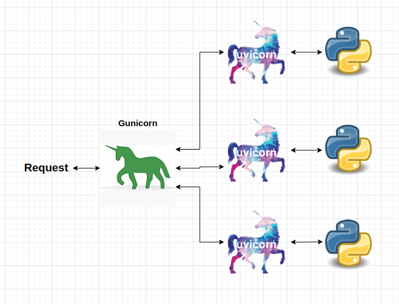

Gunicorn¶
The last piece of software which we need to build a production ready API is Gunicorn. Gunicorn is a Python web server that is used to run the API. To be more technical, Gunicorn is a Python Web Server Gateway Interface (WSGI) HTTP server. To read the official documentation of Gunicorn, visit: https://docs.gunicorn.org/en/stable/.
In a previous chapter we have explained what is an asynchronous web server interface. The main difference between ASGI and WSGI servers is that WSGI servers must wait for the workers that it is managing to complete their work before giving them another task (this is sometimes called blocking).
Gunicorn and Uvicorn¶
In the previous chapter, we have used the Uvicorn server with the FastAPI framework. Gunicorn will be used on top of that and will spawn multiple small uvicorn servers (workers) to handle the requests.
Using that combination, Gunicorn would act as a process manager, listening on the port and the IP. And it would transmit the communication to the worker processes running the Uvicorn class. And then the Gunicorn-compatible Uvicorn worker class would be in charge of converting the data sent by Gunicorn to the ASGI standard for FastAPI to use it.

Each request is first handled by the Gunicorn server. Then, the server reroutes it to the least busy uvicorn worker. Because uvicorn is an ASGI server, each worker can process requests asyncronously thus even a small number of worker uvicorn processes can handle a large number of requests.
API example with Gunicorn and Uvicorn¶
Lets use the same API code as in the previous chapter. The API accepts a number in a request and responds with the n-th root of it.
!cat gunicorn-api-example/get_n_root.py
# Importing the fastAPI library
from fastapi import FastAPI
# Creating an instance of the FastAPI class
app = FastAPI()
# Creating an endpoint with the GET method
@app.get("/root")
def root_of_number(number: float, n: float):
"""
The function returns the n-th root of the number.
Parameters
----------
number : float
The number to find the n-th root of.
n : float
The n-th root to find.
Returns
-------
float
The n-th root of the number.
"""
return {"root": number ** n}
Previously, to serve the above API code, we would run the command:
uvicorn gunicorn-api-example.get_n_root:app
Which would result in the terminal message like:
INFO: Started server process [13880]
INFO: Waiting for application startup.
INFO: Application startup complete.
INFO: Uvicorn running on http://127.0.0.1:8000 (Press CTRL+C to quit)
To spawn multiple uvicorn workers that are managed with Gunicorn we use:
gunicorn gunicorn-api-example.get_n_root:app --workers 4 --worker-class uvicorn.workers.UvicornWorker --bind 0.0.0.0:8000
Which would result in the terminal message like:
[2021-12-24 14:58:31 +0200] [14017] [INFO] Starting gunicorn 20.1.0
[2021-12-24 14:58:31 +0200] [14017] [INFO] Listening at: http://0.0.0.0:8000 (14017)
[2021-12-24 14:58:31 +0200] [14017] [INFO] Using worker: uvicorn.workers.UvicornWorker
[2021-12-24 14:58:31 +0200] [14019] [INFO] Booting worker with pid: 14019
[2021-12-24 14:58:31 +0200] [14020] [INFO] Booting worker with pid: 14020
[2021-12-24 14:58:31 +0200] [14019] [INFO] Started server process [14019]
[2021-12-24 14:58:31 +0200] [14019] [INFO] Waiting for application startup.
[2021-12-24 14:58:31 +0200] [14019] [INFO] Application startup complete.
[2021-12-24 14:58:31 +0200] [14020] [INFO] Started server process [14020]
[2021-12-24 14:58:31 +0200] [14020] [INFO] Waiting for application startup.
[2021-12-24 14:58:31 +0200] [14020] [INFO] Application startup complete.
[2021-12-24 14:58:31 +0200] [14021] [INFO] Booting worker with pid: 14021
[2021-12-24 14:58:31 +0200] [14022] [INFO] Booting worker with pid: 14022
[2021-12-24 14:58:31 +0200] [14021] [INFO] Started server process [14021]
[2021-12-24 14:58:31 +0200] [14021] [INFO] Waiting for application startup.
[2021-12-24 14:58:31 +0200] [14021] [INFO] Application startup complete.
[2021-12-24 14:58:31 +0200] [14022] [INFO] Started server process [14022]
[2021-12-24 14:58:31 +0200] [14022] [INFO] Waiting for application startup.
[2021-12-24 14:58:31 +0200] [14022] [INFO] Application startup complete.
Now to access the API, visit: http://localhost:8000/root?number=25&n=0.86. The resulting JSON is:
{"root":15.93046333819077}
Detailed explanation of what happened¶
After running the gunicorn command, the first thing that the underlying OS system did was spawn a process with a PID of 14017 which is the Gunicorn server. This is the main server that reroutes everything to the workers.
Then, the Gunicorn server spawned 4 workers, each with a PID of 14019, 14020, 14021 and 14022. These workers are the uvicorn workers that are spawned by Gunicorn using the uvicorn.workers.UvicornWorker class. All we need to know about this is that the creators of uvicorn have integrated their API handling with Gunicorn and we can seemlessly use it with Gunicorn.
Lastly, we commanded Gunicorn to listed to the port 8000 and bind to the IP of localhost (or 0.0.0.0, or 127.0.0.1).
Thus, every time some packet of data comes to localhost:8000, Gunicorn will try to handle that data.
What is very helpful is that if a worker gets shutdown (too much data, worker crashes, the system runs out of RAM), Gunicorn will automatically spawn a new worker with a new PID.
Managing Gunicorn in Ubuntu with supervisor¶
Gunicorn is a very powerfull tool to manage it’s workers. But what happens if Gunicorn server itself crashes? To solve this problem, we can use the supervisor tool in Ubuntu (many other Linux distributions have this tool as well). To read more about super visor, visit: http://supervisord.org/.
To install it in Ubuntu, run the following command:
sudo apt-get install supervisor
As the authors put it:
Supervisor is a client/server system that allows its users to monitor and control a number of processes on UNIX-like operating systems.
The main benefit of supervisor is that we can restart and monitor the Gunicorn process. Thus, even if the whole Gunicorn server is down, we can easily restart it.
Supervisor configuration¶
All the different processes that are monitored by supervisor are stored in the /etc/supervisor/conf.d directory.
Each process needs to have a configuration file in this directory. The file name is the same as the process name. For example, if we want to monitor the Gunicorn server, we would create a file called gunicorn.conf in the /etc/supervisor/conf.d directory. The contents of the file:
!cat gunicorn-api-example/gunicorn.conf
[program:gunicorn_api]
user=root
directory=/home/eligijus/api-book/api-book/chapter-6-production-tools/gunicorn-api-example/
command=/home/eligijus/api-book/api_book/bin/gunicorn get_n_root:app --workers 4 --worker-class uvicorn.workers.UvicornWorker --bind 0.0.0.0:8000
autostart=true
autorestart=true
stdout_logfile=/var/log/root-api/gunicorn.log
stderr_logfile=/var/log/root-api/gunicorn.err.log
The first line defines the program name which we will use to start/restart/shutdown the process. The name for our API is gunicorn_api
The second line defines the user that the process will run as. In this case, we will run the Gunicorn server as the user root.
The directory variable defines where all the code for the Gunicorn server is located.
The command variable defines the command that will be executed when the process is started. We need to explicitly tell the supervisor where is the Gunicorn code. In our case, it is in the virtual environment directory api_book/bin/gunicorn. Everything to the right of the /bin/gunicorn command are the parameters for how the Gunicorn should start the server.
autostart=true means that uppon Ubuntu system startup, the process will be started.
autorestart=true means that the process will be restarted if it crashes.
stdout_logfile defines the file where the standart ouptut of our process will go. These are all the user created print() statements and other messages.
stderr_logfile defines the file where the standart error of our process will go. If anything goes wrong, it will go here.
To start the Gunicorn server, we run the following command:
sudo supervisorctl reread
sudo supervisorctl update
sudo supervisorctl start gunicorn_api
To check the status of our API, we run the following command:
sudo supervisorctl status gunicorn_api
The output should look similar to the following:
gunicorn_api RUNNING pid 9352, uptime 0:18:47
If the process is running, we can query our API by visiting: http://localhost:8000/root?number=25&n=0.86.
Putting it all inside a container¶
By now, we have all the tools needed to run an API using Gunicorn, Uvicorn and FastAPI. To be able to scale and transfer our API code to multiple servers we need to use Docker and containerize the API.
This is what we will do in the next section.